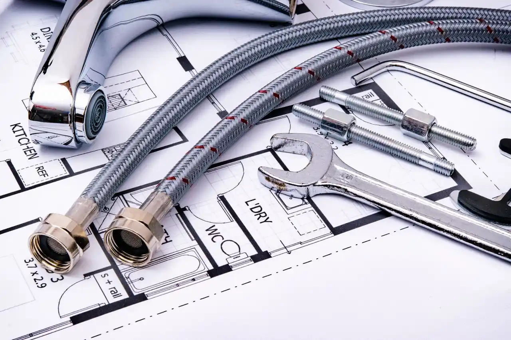

Homes in Hasbrook
We handle repairs and replacements for single-family homes across Hasbrook. From older ranches to newer builds, we know what tends to fail first.
- Mid-century ranches
- Two-story colonials
- Homes with crawl spaces
- Newer construction
Plumbing in Hasbrook means dealing with a housing stock that spans decades, from original copper in older homes near Hasbrook Park to newer PEX builds off the Central Road corridor.
Arlington Heights, il, Arlington Heights, Illinois

Serving Hasbrook and nearby

Plumbing in Hasbrook is a category of work that covers everything from a running toilet in a 1950s ranch off the Dundee Road area to a full sewer line replacement under a mature maple near Hasbrook Park. We work this neighborhood every week, and we know the difference between a quick fix and a repair that actually holds.
The Hasbrook Road area has a mix of home ages, which means we see original galvanized supply lines in some houses and newer PEX tubing in others, sometimes on the same block. That range changes how we diagnose a problem.
A low water pressure complaint in an older home might trace back to corroded galvanized pipe, while the same symptom in a newer build usually points to a failing pressure regulator or a partially closed shut-off valve. We carry the tools to tell the difference on the first visit: a pressure gauge, a sewer camera, and leak detection equipment that finds hidden moisture behind walls without tearing them open.
As a local plumbing company, we also handle the permits and inspections that Cook County and the Village of Arlington Heights require for water heater replacements, sewer repairs, and gas line work. If you have been searching for Hasbrook plumbing that shows up on time and explains the work before starting, that is what we do.
Hasbrook sits in a part of Arlington Heights where the tree canopy is mature and the sewer lines are just as old. Root intrusion is a real problem here, especially on streets near Hasbrook Park where silver maples and elms have been growing for 50-plus years. We also see a steady stream of water heater failures in the fall, when homeowners fire up the furnace and the water heater has to work harder.
The family-oriented nature of the area means we get a lot of calls about clogged drains from kids' toys, wipes, and kitchen grease. We serve Hasbrook because it is close to our base, the calls are varied, and the work is honest. You are not getting a sales pitch; you are getting a plumber who knows the neighborhood.
Good to know in Hasbrook
Roots find their way into the joints of older clay pipe, causing slow drains and backups. In Hasbrook, this is most common on streets with mature maples and elms near Hasbrook Park.
This protects you if something goes wrong.
This is the core of Hasbrook, with a mix of single-family homes built from the 1950s through the 1990s. We see a lot of original copper and galvanized pipe here, plus water heaters that are past their service life.
Hasbrook plumbing demand runs the full range, from emergency calls at 2 a.m. for a burst pipe to planned water heater replacements before the holidays. The housing mix in 60005 means we handle both older systems that need repair and newer homes that need maintenance.
When a pipe bursts at 2 a.m. in a home off the Hasbrook Road area, we roll with a full truck: pipe wrench, soldering torch, PEX crimping tool, and shut-off valves.
We repair leaking faucets, running toilets, and failing supply lines in Hasbrook homes of all ages.
Kitchen and bathroom drains in Hasbrook clog from grease, hair, and wipes. We use a drain snake and hydro jetter to clear the line and a sewer camera to confirm it is clean.
Mature trees near Hasbrook Park send roots into clay sewer laterals. We hydro jet the line to cut roots and flush debris, then run a camera to check the pipe condition.
When a sewer line in 60005 is cracked or root-damaged, we repair it with a spot fix or a partial replacement. We dig only where we need to, keeping your lawn and driveway intact.
If your Hasbrook home still has the original clay sewer lateral, it may be time for a full replacement.
A leaking water heater in the Dundee Road area usually means a failed tank or a bad anode rod. We diagnose the issue, repair what we can, and replace the unit if the tank is compromised.
We install Rheem, AO Smith, and Bradford White water heaters in Hasbrook homes. We pull the permit, set the unit, connect the gas line and venting, and haul away the old tank.
Tankless units from Navien and Rheem are popular in newer Hasbrook builds. We handle installation, descaling, and repair.

A dripping Moen or Delta faucet in your kitchen or bathroom wastes water and drives up your bill. We replace cartridges, O-rings, and entire fixtures.
Running toilets are the most common call we get in Hasbrook. We replace flappers, fill valves, and wax rings, and we install new Kohler or American Standard toilets.
We repair leaking shower valves, replace tub spouts, and install new showerheads in Hasbrook bathrooms.
A jammed or leaking garbage disposal is a quick fix if you catch it early. We repair or replace units in Hasbrook kitchens and clear the drain line while we are there.
Hasbrook basements take on water during spring thaws and heavy summer storms. We install and repair Zoeller sump pumps, check the float switch, and test the discharge line.
Hard water is common in 60005 and it scales up your water heater and fixtures. We install and repair water softeners to cut the mineral content.
If you want better-tasting water and fewer bottle runs, we install whole-house and under-sink filtration systems in Hasbrook homes.
Pick a service to see how we approach it here.
When a pipe bursts in Hasbrook, we start by shutting off the main and checking the damage. We carry pipe wrenches, soldering torches, and PEX crimping tools to make a permanent repair on the spot. Most emergency calls are resolved the same night.

We repair leaking faucets, running toilets, and failing supply lines in Hasbrook homes. We diagnose the cause before we quote the fix, so you know what you are paying for. We use Moen, Delta, and Kohler parts when replacing fixtures.

Kitchen and bathroom drains in Hasbrook clog from grease, hair, and wipes. We use a drain snake and hydro jetter to clear the line, then run a camera to confirm it is clean. If roots are the problem, we tell you before they cause a backup.

Mature trees near Hasbrook Park send roots into clay sewer laterals. We hydro jet the line to cut roots and flush debris, then run a camera to check the pipe condition. If the pipe is cracked, we move to repair or replacement before it collapses.

Homes and businesses in Hasbrook need different plumbing approaches based on usage and code requirements.
We handle repairs and replacements for single-family homes across Hasbrook. From older ranches to newer builds, we know what tends to fail first.

We serve small businesses along the Central Road corridor and Dundee Road area. That includes backflow testing, commercial water heaters, and emergency repairs.
Hasbrook has its own set of plumbing issues, driven by the age of the housing stock, the clay soil, and the mature tree canopy. We see these problems repeatedly, which means we know how to fix them fast. If you are dealing with any of these, you are not alone.

The clay sewer laterals in older Hasbrook neighborhoods have joints that roots can penetrate. Trees near Hasbrook Park and along the Central Road corridor are mature, and their roots seek out moisture in the pipe. Once inside, they grow and cause blockages.

Many Hasbrook homes have water heaters that are 10 to 15 years old. The hard water in the area accelerates sediment buildup, which corrodes the tank from the inside. When the tank fails, it leaks and stops producing hot water.

Hasbrook gets cold snaps in January and February, with temperatures dropping below zero. Pipes in unheated crawl spaces, garages, and exterior walls are vulnerable. If they freeze, they can burst and cause significant water damage.

Galvanized steel pipes, common in mid-century Hasbrook homes, corrode from the inside out. The buildup restricts flow and reduces pressure at every fixture. It also discolors the water.
If you notice any of these signs, it is time to call a plumber.
Any one of these is worth a call.
Nothing picked yet. Tap the signs you have noticed and this box will sum them up.
Hasbrook is a compact neighborhood, but knowing the landmarks helps us get to you faster. We use Hasbrook Park as a central reference point when routing calls. If you are near the Arlington Heights Park District facilities, we know the side streets and where to park.
Landmark
A central green space in the neighborhood. We use it as a reference point when routing calls to the surrounding streets. If you are near the park, we can usually find your address quickly.
Landmark
The Park District facilities are a known landmark in the area. When you mention them, we know which side of Hasbrook you are on and can plan the fastest route.
Commercial area
A mix of small retail and service businesses along Central Road. We serve several commercial properties here for backflow testing and plumbing repairs.
Commercial area
A busy corridor with a mix of commercial and residential properties. We handle plumbing calls for both.
Transit
A main east-west artery through Hasbrook. We use it to reach the Hasbrook Road area and the Dundee Road corridor. Traffic can slow us down during rush hour.
Transit
A major road that runs through the area. It connects Hasbrook to other parts of Arlington Heights. We use it for calls on the north side of the neighborhood.
Our sewer backed up on a Sunday night. Five Star Plumber had a truck at our house in Hasbrook within 45 minutes. They ran a camera, found the root intrusion, and hydro jetted the line. The price was fair and they explained everything. We will use them again.
Our water heater died the day before Thanksgiving. I called and they came out the same afternoon. The tech had a new Rheem heater on the truck and installed it in a few hours. He was clean, polite, and did not try to upsell us. Great service.
We had low water pressure for months. Five Star Plumber diagnosed the problem as corroded galvanized pipe and repiped the whole house. It was a big job, but they finished in three days and cleaned up every night. The pressure is great now and the water is clear.
Hasbrook sees all four seasons, and each one brings its own plumbing challenges. Winter is the busiest time for emergency calls, but spring and summer have their own issues. Knowing what to expect can help you prepare.
Hasbrook is part of a larger service area that includes several Arlington Heights neighborhoods. We run trucks through these areas daily, so we can often combine a Hasbrook call with a nearby one.
Straight answers to what people ask first.
We give you a written estimate before we start, so there are no surprises.
If you are in Hasbrook and need a plumber right now, call us. We run service routes through the area daily and can often be at your door within 30 to 60 minutes for emergencies. We serve all of 60005, including the Hasbrook Road area, Central Road corridor, and Dundee Road area.
If your pipes freeze, turn off the water at the main shut-off valve and call us. Do not use a torch or open flame to thaw the pipe. We use controlled heat to thaw the line safely and check for cracks. If the pipe has burst, we repair it and insulate the area to prevent it from happening again.
If you have a plumbing problem in Hasbrook, do not wait. A small leak can turn into a flooded basement, and a slow drain can become a sewer backup. Call Five Star Plumber at (224) 643-9856.
Call (224) 643-9856 or email us and we will get back to you fast. Tell us what is going on and we will tell you what it takes to fix it.